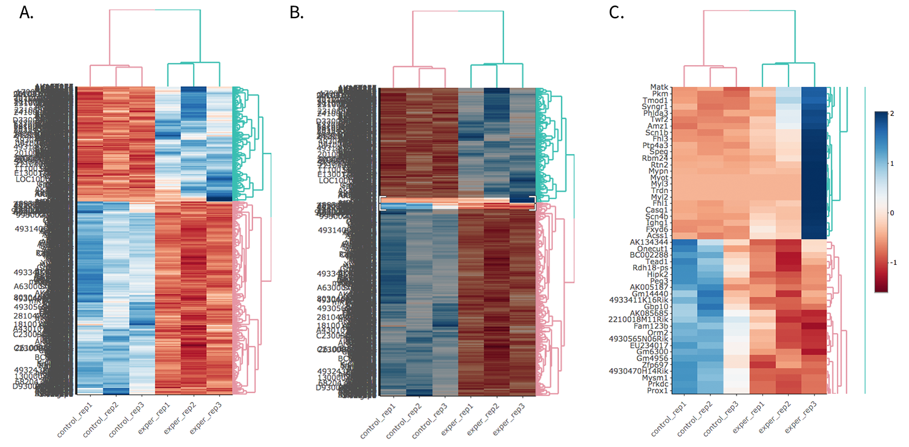
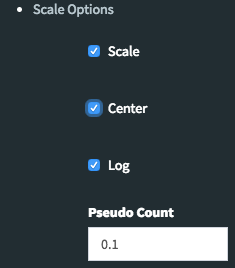

Heatmaps¶
The heatmap is a great way to analyze replicate results of genes all in one simple plot. Users have the option to change the clustering method used as well as the distance method used to display their heatmap. In addition, you can also change the size of the heatmap produced and adjust the p-adjust and fold change cut off for this plot as well.
Used clustering and linkage methods in heatmap¶
- complete:
Complete-linkage clustering is one of the linkage method used in hierarchical clustering. In each step of clustering, closest cluster pairs are always merged up to a specified distance threshold. Distance between clusters for complete link clustering is the maximum of the distances between the members of the clusters.
- ward D2:
Ward method aims to find compact and spherical clusters. The distance between two clusters is calculated by the sum of squared deviations from points to centroids. “ward.D2” method uses criterion (Murtagh and Legendre 2014) to minimize ward clustering method. The only difference ward.D2 and ward is the dissimilarities from ward method squared before cluster updating. This method tends to be sensitive to the outliers.
- single:
Distance between clusters for single linkage is the minimum of the distances between the members of the clusters.
- average:
Distance between clusters for average linkage is the average of the distances between the members of the clusters.
- mcquitty:
mcquitty linkage is when two clusters are joined, the distance of the new cluster to any other cluster is calculated by the average of the distances of the soon to be joined clusters to that other cluster.
- median:
This is a different averaging method that uses the median instead of the mean. It is used to reduce the effect of outliers.
- centroid:
The distance between cluster pairs is defined as the Euclidean distance between their centroids or means.
Used distance methods in heatmap¶
- cor:
1 - cor(x) are used to define the dissimilarity between samples. It is less sensitive to the outliers and scaling.
- euclidean:
It is the most common use of distance. It is sensitive to the outliers and scaling. It is defined as the square root of the sum of the square differences between gene counts.
- maximum:
The maximum distance between two samples is the sum of the maximum expression value of the corresponding genes.
- manhattan:
The Manhattan distance between two samples is the sum of the differences of their corresponding genes.
- canberra:
Canberra distance is similar to the Manhattan distance and it is a special form of the Minkowski distance. The difference is that the absolute difference between the gene counts of the two genes is divided by the sum of the absolute counts prior to summing.
- minkowsky:
It is generalized form of euclidean distance.
Note
For distances other than ‘cor’, the distance function defined will be ( 1 - (the correlation between samples)).
For additional information about the clustering methods you can consult this website and for distance methods here.
Interactive Heatmap¶
You can also select to view an interactive version of the heatmap by clicking on the ‘Interactive’ checkbox on the left panel under the height and width options. Selecting this feature changes the heatmap into an interactive version with two colors, allowing you to select specific genes to be compared within the GO term plots.
Just like in the Main Plots, you can click and drag to create a selection. To select a specific portion of the heatmap, make sure to highlight the middle of the heatmap gene box in order to fully select a specific gene. This selection can be used later within the GO Term plots for specific queries on your selection.
{kind=link}
Before Selection B. Selection of area with zoom tool C. Zoomed heatmap region which allows better viewing resolution.
Tip
Interactive Feature: In order to increase the performance of the generating heatmaps, interactive option is disabled by default. After deciding plotting/clustering parameters of the heatmap, you might activate this feature to investigate each block in detail.
The Heatmap of DE Analysis¶
Once you’ve selected a specific region on Main Plots (Scatter, Volcano or MA plot), a new heatmap of the selected area will appear just next to your plot. If you want to hide some groups (such as Up, Down or NS based on DE analysis), just click on the group label on the top right part of the figure. In this way, you can select a specific part of the genes by lasso select or box select tools that includes only Up or Down Regulated genes. As soon as you completed your selection, heatmap will be created simultaneously.

A. Box Selection, B. Lasso Selection, C. Created heatmap based on selection
Tip
We strongly recommend normalization before plotting heatmaps. To normalize, please change the parameters that are located under: Data options -> Normalization Methods and select the method from the dropdown box.
The Scale Option of Heatmap¶
By using Scale Option field on the left sidebar menu, it is possible to adjust scaling parameters of DEBrowser. There are four main options:

Center: If it is checked then centering is done by subtracting the column means of data from their corresponding columns. Otherwise no centering is done.(Default value:Checked)
Scale: The value of scale determines how column scaling is performed (after centering). If scale is checked then scaling is done by dividing the (centered) columns of the data by their standard deviations if center is checked, and the root mean square if center is unchecked. If scale is unchecked, no scaling is done.(Default value:Checked)
Log: The value of log determines the log2 operation of data matrix (Default value:Checked)
Pseudo-Count: This value added to each element to prevent getting undefined (logarithm of zero) before calculation of log2(Default value:0.1)
{kind=link}